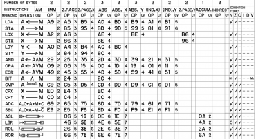
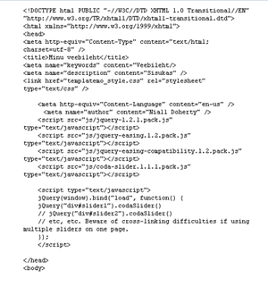

Soubor
je množina souvisejících dat uložených na diskové jednotce. Název souboru je obvykle tvořen jménem a příponou, která naznačuje typ souboru. K dalším vlastnostem souboru patří jeho velikost, autor , datum vytvoření, datum změny, atributy, přístupová práva apod. K přehlednější práci se soubory slouží systém adresářů či složek . Adresáře tvoří na disku typicky hierarchickou strukturu ; základem je tzv. kořenový adresář označený symbolem „/“, nebo„\“. Každý adresář může obsahovat soubory i podadresáře.
Cesta
Vyjadřuje umístění souboru vždy směrem od nejvyššího adresáře: C:\XAMPP\mysql\bin\mysql.exe. Pro operace se soubory využíváme někdy zástupné znaky:
▫ symbol * nahrazuje v názvu libovolný počet znaků;
▫ symbol ? nahrazuje jeden libovolný znak.
Programové soubory
Obsahují instrukce, podle nichž procesor ve spolupráci s dalšími hardwarovými komponentami plní konkrétní úlohy. Mohou být uloženy v již zkompilované binární podobě, nebo ve zdrojovém kódu, obsahujícím příkazy určitého programovacího jazyka. Mezi programové soubory můžeme zařadit také skripty, soubory instrukcí v textové podobě, které ke svému spuštění vyžadují speciální program - interpret.


Programové knihovny
Větší programy jsou tvořeny programovými knihovnami, speciálními soubory s připravenými funkcemi, které programy využívají pro svůj běh. Ve Windows to jsou např. soubory DRV a SYS , nebo také DLL , které mohou být podle potřebyza běhu připojeny k jednomu i více programům. Některé soubory s tzv. spustitelnou příponou slouží ke spuštění programu - aktivaci procesu v rámci operačního systému. Za rezidentní programy označujeme ty procesy, které jsou spuštěny automaticky po iniciaci operačního systému .
Datové soubory
Obsahují data různého charakteru. K jejich zpracování se používají konkrétní programy, a proto jsou často přípony těchto datových souborů asociovány s určitou aplikací .